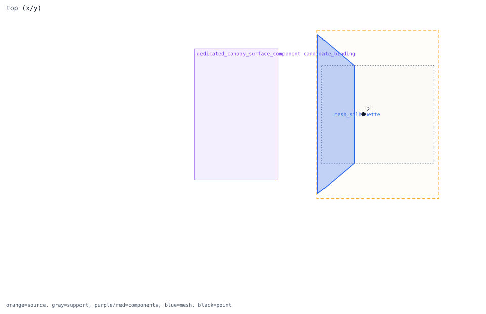
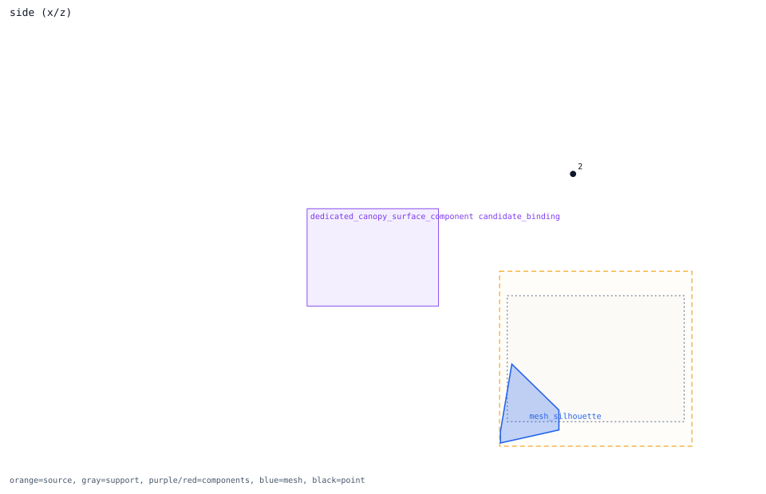
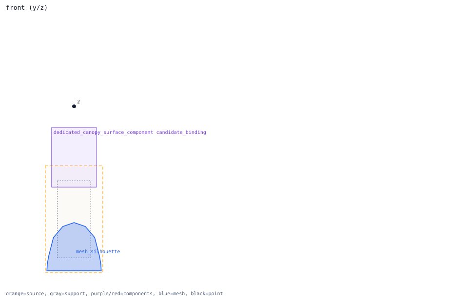

nose_axis_6m -> dedicated_canopy_surface_component
review point candidate
Review question
Does nose_axis_6m explain the nose close-to-shape behavior without relying on direct-hit boxes?
Look at
The black point should be read against the nose/forward-fuselage blue silhouette and nearby red component boxes.
Decision needed
Decide whether this point has a valid candidate-component path, or whether nose proximity must remain held.
Trace Details
- point: nose_axis_6m at [6.0, 0.0, 0.0]
- nearest outer region: nose_radome
- nearest outer distance: 0.349524 m
- nearest fine proxy: nose_radome
- isolated candidate component: dedicated_canopy_surface_component
- nearest component: cockpit_crew_station
- nearest component distance: 0.0 m
- candidate component count: 5
- interpretation: point_inside_component_box_review_only


